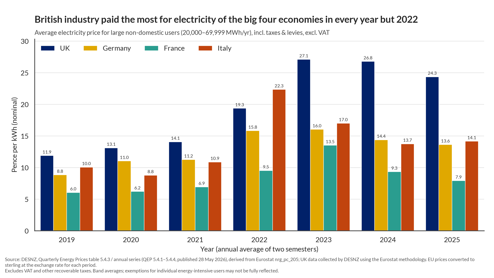
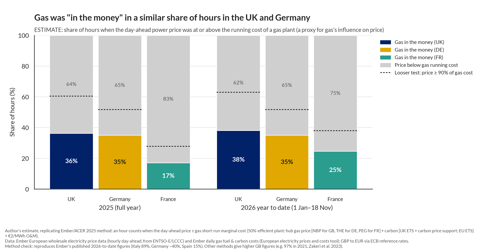
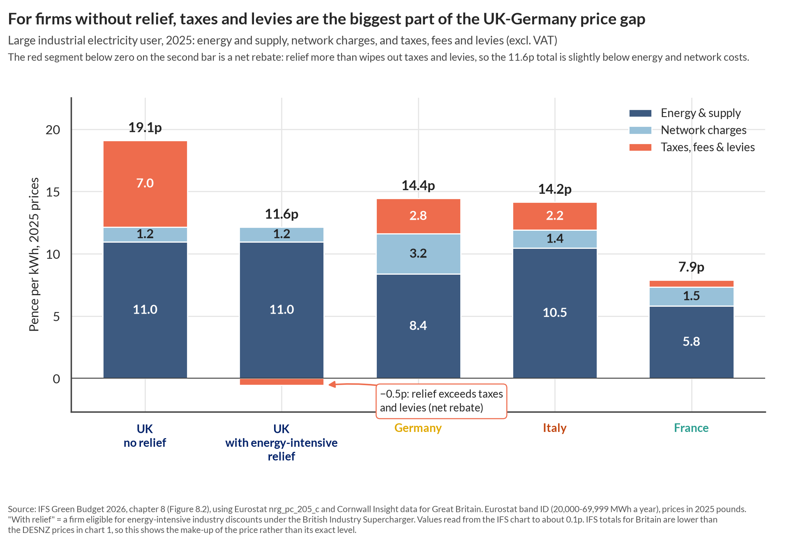
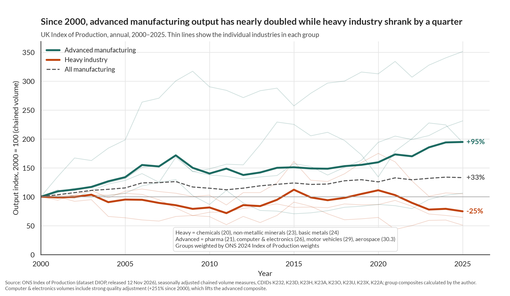
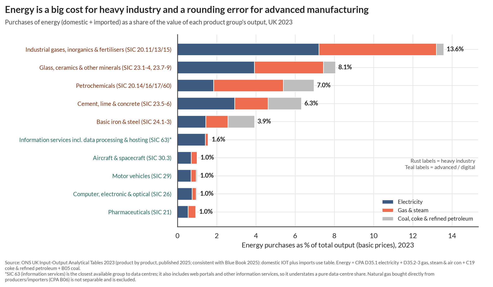

Britain's energy is too expensive for a manufacturing comeback
DraftThe UK, France, Germany and Italy are western Europe's four biggest economies. Each depends on affordable power to keep its heavy industries alive. Since 2019, the UK has been falling far behind. With higher energy costs, the UK’s energy intensive heavy industries are at risk.
Between 2019 and 2025, industrial electricity prices for large users rose drastically in the UK compared to France, Germany and Italy. In 2025, British industry was paying 24.3p/kWh, nearly double Germany and Italy and three times France. Prices spiked everywhere in 2022 after Russia's invasion of Ukraine, and Germany, France and Italy have since fallen back. Britain's prices peaked a year later, in 2023, and are still more than double their 2019 level.
Energy is critical for heavy industry because it is effectively a raw material. Making fertiliser, glass, cement and steel takes huge amounts of energy on top of the physical inputs. Without affordable energy, these industries cannot survive. The UK's most energy-intensive industries are chemicals, glass, cement and steel. They are smaller than pharmaceuticals or aerospace, but they make the inputs those industries depend on: steel goes into wind turbines and basic chemicals into pharmaceuticals.
Britain needs to actively help heavy industries because if the country cannot offer competitive energy prices, they will leave. If these factories close, Britain will depend on other countries for steel for rail, wind turbine towers and defence, and for ammonia, fertiliser and the CO2 used in food and hospitals.

Why British power costs so much
High prices in Britain comes from how the grid works. The grid has to meet demand from households and industry, and no single source of energy usually satisfies all demand. In the UK, for example, nuclear power supplied only about 12% of electricity in 2025.
At any point in time, demand has to be met by several energy producers, and the price for everyone is set by the most expensive plant needed in that hour, often a gas plant. This is called last-unit pricing. Say you have nuclear, wind and gas. Nuclear and wind can sell very cheaply, but if they can't meet all demand and gas has to fill the gap, every unit in that hour is paid the gas price.
To soften the effect of last-unit pricing, the UK introduced Contracts for Difference (CfDs), which give low-carbon generators a fixed price. When the market price is higher than that price, they pay the difference back, and that money goes back to bill payers.
Gas has a similar influence on price in Britain and Germany. In 36% of hours in 2025, UK power prices were at or above the estimated running cost of a gas plant, against 35% in Germany and 17% in France.

The difference in costs come from taxes. In 2025, a large British industrial user paid 7.0p per kWh in taxes, fees and levies, against 2.8p in Germany, according to the IFS. That's 2.5x as much, and it's the biggest part of the gap in total price. About 600 energy-intensive firms get relief that cancels these taxes, which brings their price to 11.6p, below Germany and Italy. From 2027, about 10,000 firms will get that relief.

Britain also has a single national wholesale price. Cheap wind in Scotland and expensive gas in England are priced the same. This is a peculiar decision, because with regional pricing, as in Norway, Sweden and Italy, factories could relocate to where power is cheaper. The government considered splitting the market into zones but rejected zonal pricing in July 2025. Instead, whenever last-unit pricing kicks in, the price is set by gas across the whole country.
Getting a connection is another problem. To connect to the grid, power projects and large users join a queue. For years it was first come, first served: anyone could reserve capacity, and many projects that were never built blocked real ones behind them. These were called ‘zombie projects’. In 2025 the system moved to ‘first ready, first connected’: projects must now show that they hold the land and are making progress to keep their place.
Heavy industry pays the price
Britain's costly grid is changing which industries it keeps. Advanced manufacturing output has grown by 95% since 2000, so high energy costs have not stopped manufacturing as a whole. But over the same period heavy industry’s output has fallen by 25%. What heavy industry makes is hard to replace. British Steel in Scunthorpe is the UK’s only maker of rail and supplies 80% of Network Rail’s rail. The UK already imports about 87% of its wind turbine towers. And when CF Industries closed its Billingham ammonia plant in 2023, the UK lost a source of fertiliser and of the CO2 used in food and hospitals. That plant had supplied nearly a third of UK CO2.

Heavy industries rely on constant energy far more than advanced manufacturing does. Even with accurate price forecasts, they have to bear the cost of energy because their machinery always has to run. When gas sets the price, they still have to pay the high unit price. Some big users lock in prices with long-term power contracts, and electric furnaces can time their melts for cheaper hours. But most of this demand is not flexible. A chemical plant or a glass furnace can't stop when the price jumps.
Advanced manufacturers pay the same prices, but they feel them far less. Energy is about 1% of output for pharmaceuticals and aerospace, against 6–14% for cement, glass and fertilisers. Energy is basically a rounding error next to advanced machinery and skilled staff. But for heavy industry, it decides whether a plant survives.

Advanced manufacturing also has an edge when connecting to the grid. This industry is well funded and has a smaller physical footprint, so it can secure land much faster. That makes it look ready sooner than heavy manufacturing and helps it connect on shorter timelines. On the other hand, heavy manufacturing has high capital costs and uncertain timelines which makes it look less prepared.
An example is Port Talbot: Tata Steel is replacing its blast furnaces with a modern electric furnace. It signed a grid connection offer in 2024 for power by the end of 2027. The furnace itself should be ready in 2028, but the new substations and cables it needs are not, so full power is not expected until 2029.
Cheap energy is a national strategy
European countries have kept power cheaper for their big manufacturers through different approaches. Here is how they compare:
- In Germany, energy-intensive industries like chemicals and steel are shielded from taxes and network costs, and the cost of that relief is passed on to other bill payers and taxpayers. Germany has a similar market to the UK, but its industrial energy prices are half of Britain’s.
- Most of France’s electricity comes from nuclear power. It built firm power, which gives industry long-term access to cheaper energy: France had the lowest industrial prices of the four countries in 2025. Alongside nuclear power, France provides state-backed contracts that supply nuclear power at fixed prices over long periods.
- Sweden and Norway use regional pricing, so manufacturers can create hubs in regions where energy is cheaper. Their regional prices are built around cheap hydro power, and they have been attracting steel and battery projects.
The same pattern holds outside Europe. The world's industrial powers already use cheap energy as a strategic tool. The United States used a surplus of gas and subsidies to re-shore factories, and China used cheap coal power to build its lead in steel, aluminium and solar panels. Today, US industry pays about half what the EU pays for power, and China pays about a third less, according to the IEA.
Britain has already started changing it’s policies:
- From April 2027, the British Industrial Competitiveness Scheme will cut electricity bills by up to 25% for thousands of manufacturers.
- Network charge relief for the most energy-intensive firms has already risen to 90%.
- The Carbon Price Support tax on gas generation will be removed from April 2028.
These show that the fastest lever is changing how Britain bills its manufacturers. Taxes and carbon costs are a large part of why British industry pays nearly twice Germany’s price. Those are policy choices that can change in a budget, while new nuclear plants and a new grid can take a decade to build.
Today, the British grid doesn’t favour heavy industry. With these changes, that could start to shift in the near term. But in the long term, Britain needs consistently cheap power to keep making steel, chemicals, glass and cement at home.